Humanidades digitales aplicadas a la Filología árabe · Escuela de Estudios Árabes (CSIC), Granada
Digital Humanities Applied to Arabic Philology
From Texts to a Cultural System
Maxim Romanov
CSIC · November 18, 2026 · Sala Julián Ribera, CCHS-CSIC, Madrid · Universität Hamburg
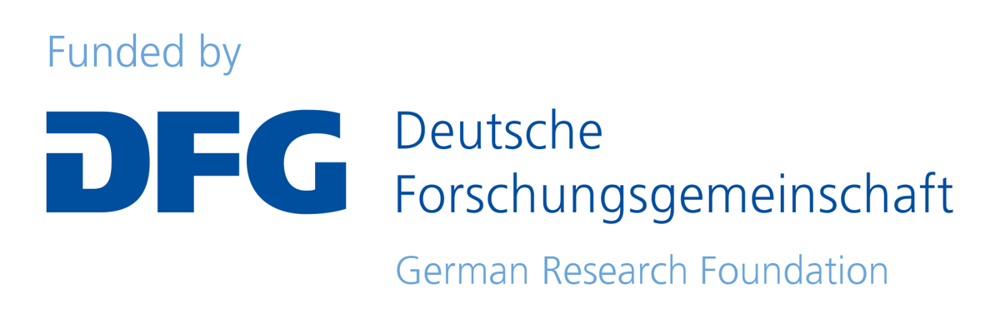
Structure
١State of the field
٢My contributions
٣Future development
٤My research program at Granada
Part
1
State of the field
What digital Arabic philology can investigate, and what still holds it back
The development of digital resources and methods has outpaced their integration into research practice
The evidence: thousands of Arabic works spanning fourteen centuries are now available for computational analysis.
The prevailing practice: research remains concentrated on individual texts, limited selections, and narrowly defined problems.
The challenge: build a cumulative understanding of social history, cultural production, the development of textual types (“genres”), and the historical development of the Arabic language itself.
What becomes possible when we study the Arabic written tradition as an interconnected whole?
Part 1 · State of the field
The precedent of prosopography
Onomasticon Arabicum Netherlands Ulama Project Prosopografía de los ulemas de al-Andalus
Evidence organized across many sources
Shared structures for systematic comparison
Long-term accumulation of scholarly knowledge
A foundation for extending cumulative research across the written tradition.
Part 1 · State of the field
2016202020242026
2016 · the first attempt
The Digital Humanities and Islamic & Middle East Studies
Elias Muhanna (ed.)
Berlin: De Gruyter, 2016 · doi.org/10.1515/9783110376517
Reflection on digital scholarship alongside computational case studies
Most contributions reflect on “the digital” rather than practice it.
Part 1 · State of the field
2016202020242026
2020 · a handbook of tools
Among Digitized Manuscripts: Philology, Codicology, Paleography in a Digital World
L.W.C. van Lit
Handbook of Oriental Studies 137 · Leiden: Brill, 2020 · open access · doi.org/10.1163/9789004400351
Digitized versus physical manuscripts; twenty online repositories ranked by ten criteria
TEI, IIIF, catalog databases, Python and OpenCV
Formats and tools, but no research question and no analytical result.
Part 1 · State of the field
2016202020242026
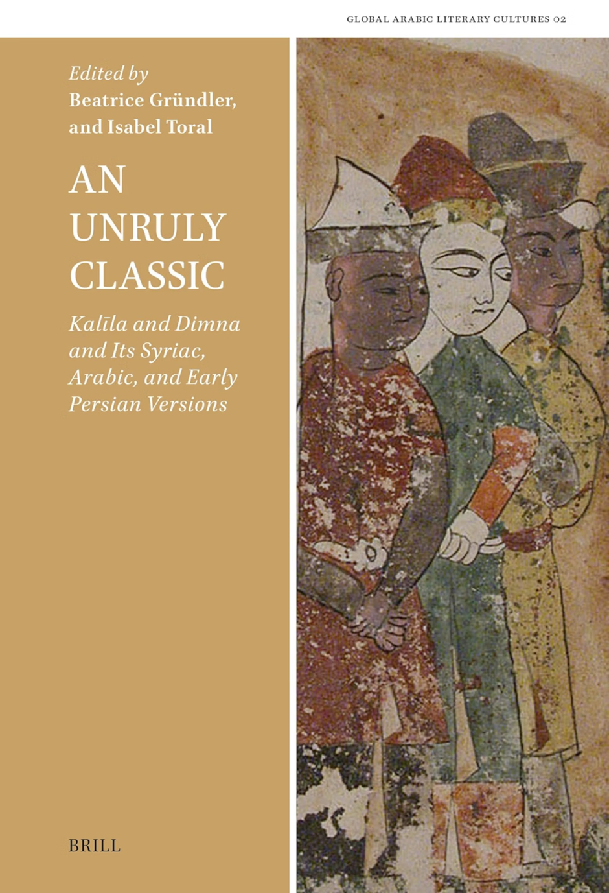
2024 · a project and its infrastructure
An Unruly Classic: Kalīla and Dimna and Its Syriac, Arabic, and Early Persian Versions
Beatrice Gründler and Isabel Toral (eds.)
Global Arabic Literary Cultures 2 · Leiden: Brill, 2024 · open access · doi.org/10.1163/9789004693579
Variation and mutability across the versions of one text
The digital infrastructure the project needed, including a chapter on its software
Digital infrastructure in the service of a question, but a single textual tradition.
Part 1 · State of the field
2016202020242026
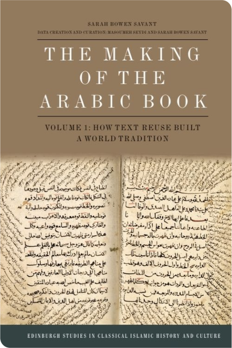
2026 · the KITAB results
The Making of the Arabic Book
Vol. 1:How Text Reuse Built a World Tradition. Sarah Bowen Savant Vol. 2:Writerly Practices, Memory and Communities. Mathew Barber, Lorenz Nigst, Aslisho Qurboniev, Gowaart Van Den Bossche, Peter Verkinderen
Edinburgh University Press, December 2026 · open access
Text reuse across more than a billion words of Arabic, c. 700–1500 CE
How authors reused texts, how they described it, what it did to the tradition
Shared foundationOpenITI: the corpus and methods described in chapter 2 of my book, which also underlie EIS1600
Part 1 · State of the field
2016202020242026
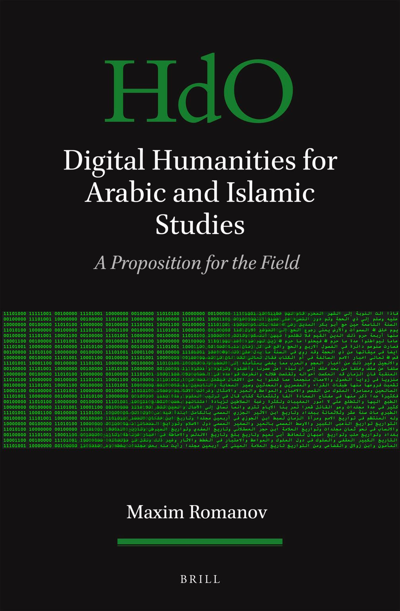
2026 · a proposition for the field
Digital Humanities for Arabic and Islamic Studies: A Proposition for the Field
Why: the scale of the written tradition and the limits of reading it text by text
How: a corpus built for research: OpenITI, mARkdown, URIs, versioned releases
What it gives: term histories, textual typology, linguistic periodization
What should digital humanities in our field be, and what can it give us?
Part 1 · State of the field
A field without consolidation
Articles
Projects
Resources
Methods
Occasional workshops
No consolidation
The field is small: no place offers a critical mass of scholars to move this forward
Exception: the Centre for Digital Humanities (CDH) at Aga Khan University–London, led by Professor Sarah Savant a close collaborator, with whom I have been working on this vision of DH since 2014
Part 1 · State of the field
Part
2
My contributions
Resources, methods, and historical results
The Proposition: Four Domains
IDigital AvatarsMachine-readable editions of manuscripts and printed books
IIMetaobjectsCorpora, databases, and linked open data at scale
IIIComputational MethodsStatistics, stylometry, and NLP adapted for Arabic
IVNetworksKnowledge networks: text, person, place, and time connected
The domains connect the construction of evidence with historical interpretation.
Part 2 · My contributions
The main resource
A Proxy to the Arabic Written Tradition
OpenITI as a chronological and geographical representation
Nigst, Lorenz, Maxim Romanov, Sarah Bowen Savant, Masoumeh Seydi, and Peter Verkinderen. OpenITI: A Machine-Readable Corpus of Islamicate Texts, Primary Version. Version 2025.1.9. Zenodo, 2026. doi.org/10.5281/zenodo.18613982
Part 2 · My contributions
OpenITI, v. 2023.1.8 — “clean”
Our final subcorpus, based on version 2023.1.8, consisting solely of “clean” unique texts written up to 1400/1980:
– 2,783 unique authors (156 fewer than in the set above, or 94.69%)
– 7,058 unique texts (−407 fewer, or 94.55%)
– 927.37 million tokens before cleaning
– 868.81 million tokens after removal of most paraeditorial material and remaining “unclean” (93.68% of the uncleaned set)
Part 2 · My contributions
Part 2 · My contributions
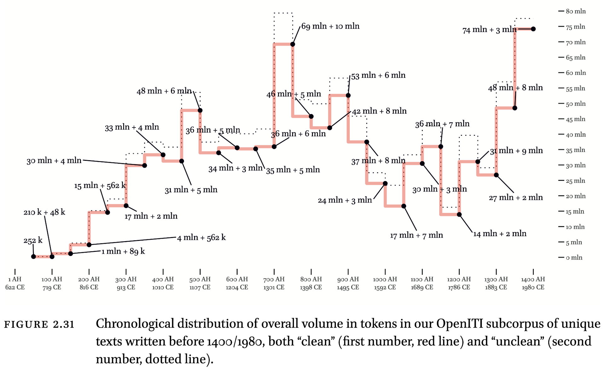
Part 2 · My contributions
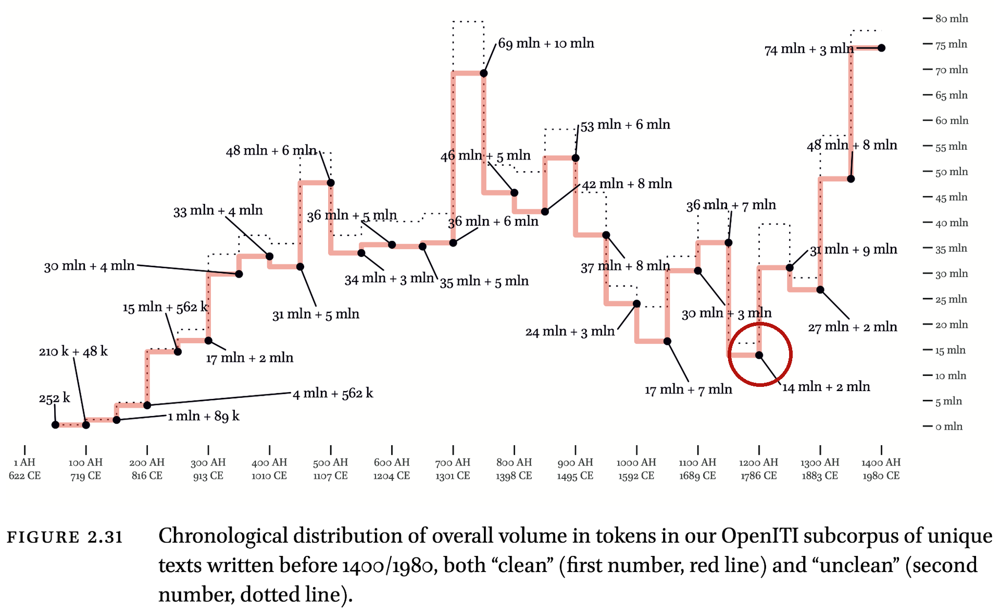
The same framing at every scale
١A termis understood through the corpus: when does it appear across time and space? who uses it? and who doesn’t?
٢A bookis understood through other books: what other books it builds on? how does it fit among the rest?
٣A traditionis understood through the geographical and chronological layers of books: how does its language change? how do its topics shift?
Part 2 · My contributions
Case 1
A term in time
When did al-kutub al-sittaŧ come to be?
Part 2 · My contributions
Case 1: al-kutub al-sittaŧ (الكتب الستة)
In “The Devil’s Delusions” (Talbīs Iblīs), Ibn al-Jawzī (d. 597/1201) uses lots of ḥadīṯs:
- No isnāds for: Muslim, al-Buḫārī, and Abū Dāwūd
- Full isnāds for: al-Tirmiḏī, Ibn Mājah, and al-Nasāʾī
No notion of al-kutub al-sittaŧ in the end of the 6th/12th century in Baġdād.
Part 2 · My contributions
Part 2 · My contributions
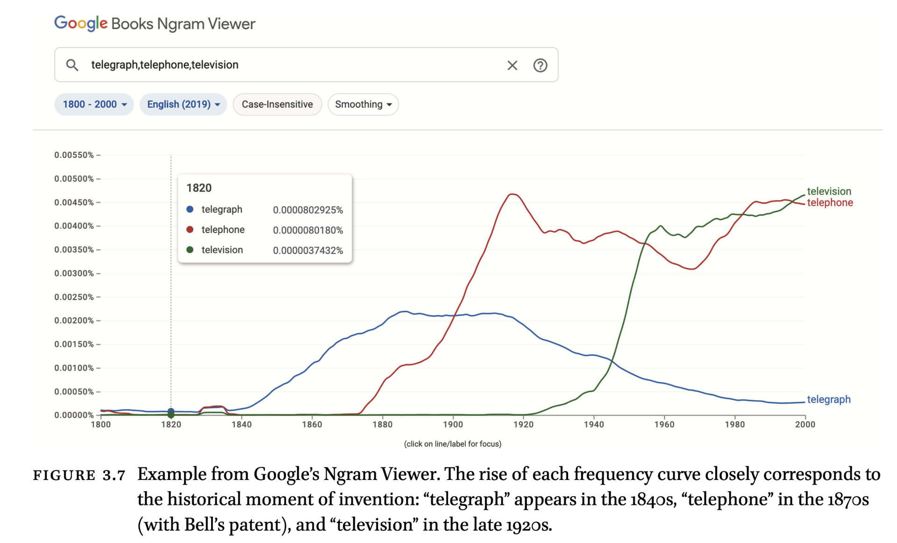
Part 2 · My contributions
Part 2 · My contributions
Case 2
A book among books
Text reuse and the modeling of text types
Part 2 · My contributions
Case 2a
Text Reuse
By tracing at scale how later texts reuse earlier texts we can understand how each book fits into the tradition and how all the books form a network of interconnections
Part 2 · My contributions
Among them was Abd Allãh b. Ḫāzim al-Sulamī, the governor of Ḫurāsān for Abd Allãh b. al-Zubayr. What was remarkable about him was that he was extremely brave and resourceful, yet he was terrified of mice. One day, while he was with ʿUbayd Allãh b. Ziyād, a white rat was brought before him and he was astonished. ʿUbayd Allãh said to ʿAbd Allãh, ‘O Abū Ṣāliḥ, have you ever seen anything more astonishing than this?’ And there was Abd Allãh, who had shrunk as if he were a chick and turned yellow as if he were a male locust. ʿUbayd Allãh then said, “Abū Ṣaliḥ disobeys the Merciful, takes lightly the authority, seizes the snake, walks toward the blooming lion, faces spears with his face and swords with his hands, and yet, he is overcome by a rat as you see. I testify that Allãh is capable of everything.
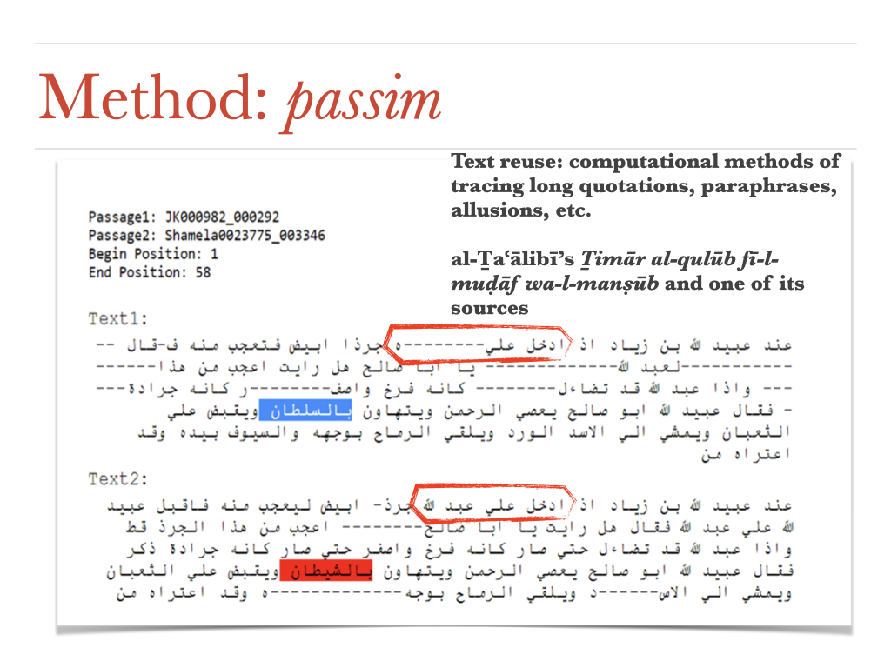
Part 2 · My contributions
al-Ḏahabī and his Tārīḫ al-islām
Šams al-dīn al-Ḏahabī (d. 748/1348): historian, ḥadīṯ scholar, biographer.
Tārīḫ al-islām — a universal chronicle-cum-biographical collection covering seven centuries of Islamic history (1–700 AH / 622–1301 CE), organized decade by decade.
c. 30,000 biographies
c. 3 million words
Two modern editions: 50 vols. (Tadmurī) and 16 vols. (Maʿrūf)
Built largely from earlier sources — an ideal test case for text-reuse detection at scale.
Part 2 · My contributions
Part 2 · My contributions
Part 2 · My contributions
Part 2 · My contributions
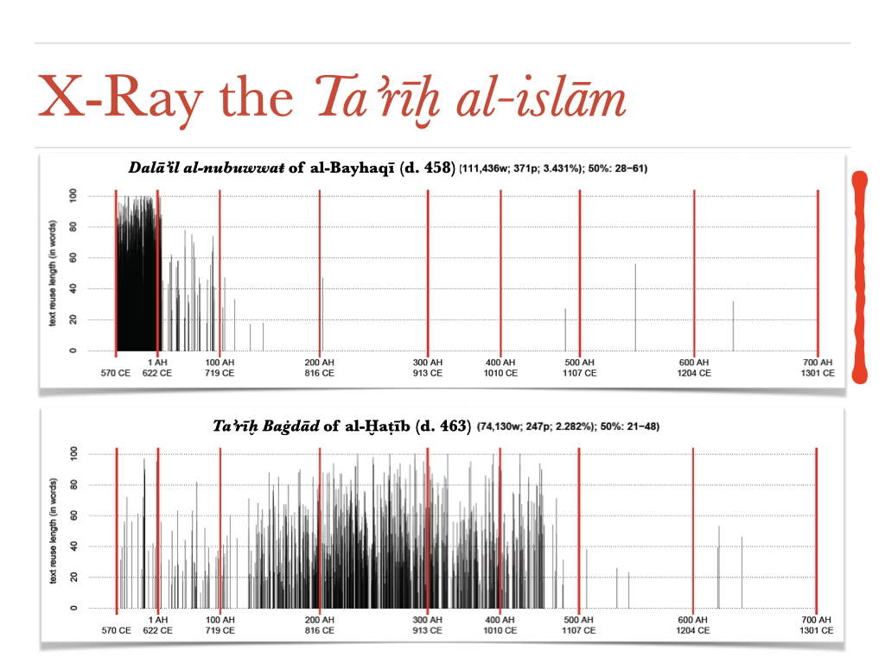
Part 2 · My contributions
Part 2 · My contributions
Part 2 · My contributions
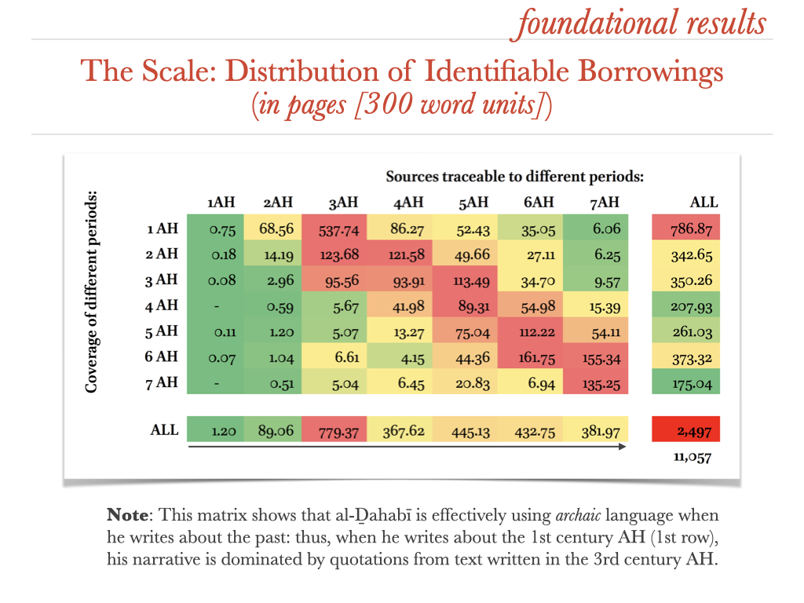
Case 2b
Modeling Textual Typology
By modeling major textual types, we can identify types of unknown books and understand the structural composition of the complex books
Part 2 · My contributions
Case 2b. Modeling Textual Typology
[B] Biographical type (tarājim): mostly collections of biographies
[E] Exegetical type: interpretations of the Qurʾān (tafsīr)
[G] Graeco-Arabic (“Greek-esque”) type (yūnāniyyāt): translations from Greek and works on the development of Greek philosophy in Arabic (falsafat, predominantly Aristotelian)
[H] Historical type (tawārīḫ): mainly chronicles
[F] Legal type (fiqh): a broad variety of legal texts
[L] Linguistic type: a broad variety of grammatical, rhetorical, and lexicographical texts (balāġat, naḥw, maʿājim luġawiyyat)
[M] Medical type (ṭibb): mainly texts on Galenic medicine
[P] Poetic type (šiʿr): mainly collections of poetry (dīwāns)
[K] “Scholastic-theological” type: works of kalām
[Ḥ] Tradition-based type: collections of ḥadīṯ
Part 2 · My contributions
Testing the model: exegetical type (tafsīr)
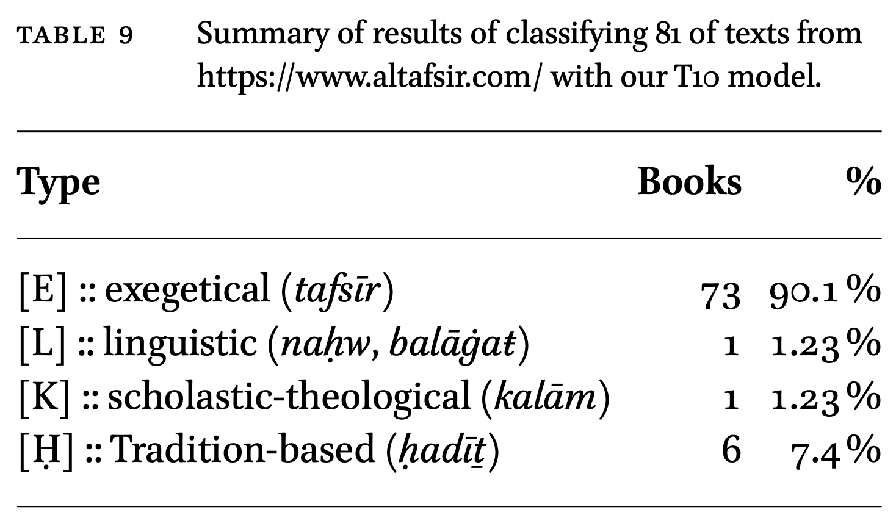
Part 2 · My contributions
The eight exceptions
Mafātīḥ al-ġayb by Faḫr al-dīn al-Rāzī (d. 606/1210) → classified [K] scholastic-theological: it is in fact a major work of kalām, and samples from it were used to train the [K] type
Ġarīb al-Qurʾān by Abū Bakr al-Sijistānī (d. 330/942) → classified [L] linguistic (still 26% exegetical signal): closer to a dictionary than to a traditional tafsīr
Six early ḥadīṯ-based interpretations — by Mujāhid b. Jabr, ʿAbd al-Razzāq al-Ṣanʿānī, Ibn Ḥakam al-Ḥibarī, al-Nasāʾī, al-Ṭabarī, and Furāt al-Kūfī — classified [Ḥ] Tradition-based: composed mainly of ḥadīṯ reports, so hardly a real mistake; three still carry a strong exegetical signal (28%, 42%, 49%)
73 of 81 texts (90.1%) landed correctly on the first pass; every exception is explicable.
Part 2 · My contributions
Rolling Assessment: al-Šāfiʿī’s Kitāb al-Umm
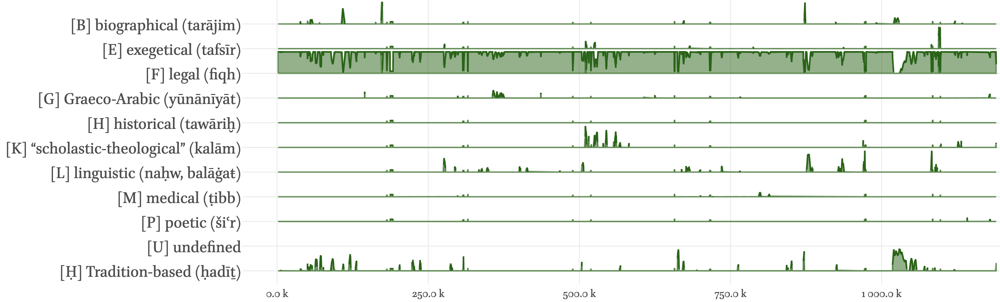
Rolling typological assessment of Kitāb al-Umm of al-Šāfiʿī (d. 204/820) a single dominant type — [F] legal — running almost unbroken from beginning to end.
Part 2 · My contributions
Rolling Assessment: Ibn al-Jawzī’s Talbīs Iblīs
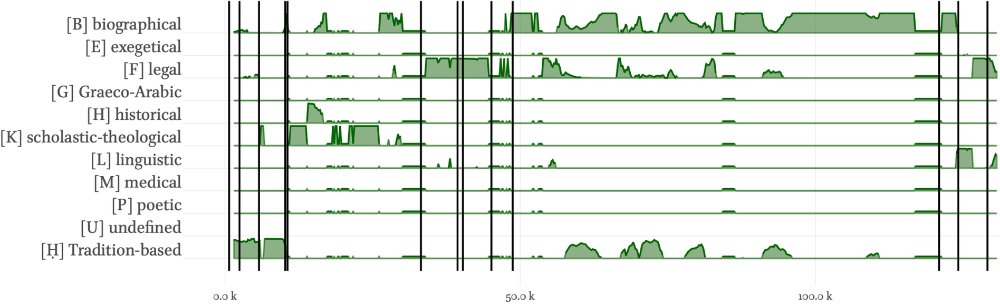
Rolling typological assessment of Talbīs Iblīs of Ibn al-Jawzī (d. 597/1201) shows that individual chapters (separated by vertical black lines) usually contain text reflecting specific types.
Part 2 · My contributions
Majmūʿāt Case
Value for manuscripts:
When HTR starts working, we will need a mechanism to assess HTR-ed texts automatically: we can potentially identify type, author, exact text
Particularly valuable for majmūʿāt — the most numerous kind of manuscripts, the most difficult to read and analyze
Part 2 · My contributions
Case 3
A Tradition
language change and topic shifts through chronological layers of books
Part 2 · My contributions
Case 3. Periodization
Preclassical c. 622–750
Classical 750–1258
Postclassical 1258–1798
Modern 1798–
Preclassical600–750
Classical750–1258
Postclassical1258–1798
Modern1798–
Where do these boundaries come from? What if we ask the corpus?
Geschichte der arabischen Litteratur, 5 vols. (1896–1943)
Cambridge History of Arabic Literature, 6 vols. (1983–2006)
Encyclopedia of Arabic Language and Linguistics (Brill)
Part 2 · My contributions
Two witnesses
First witness: Corpus
Part 2 · My contributions
Part 2 · My contributions
Two lenses on change
Keywords (TF–IDF): what texts are about Style (MFV): how texts are written
Hundreds of parameter combinations
3,000 random samples (MFV)
72,000 dendrograms » 48 consensus trees
Do not trust a tree. Ask what survives across trees.
Contentkeywords / TF–IDF
Stylemost frequent vocabulary
Part 2 · My contributions
Style
stylometry
distributions of frequencies of most frequent words (function words) are unique to individual:
authors
periods
Part 2 · My contributions
Style
stylometry
distributions of frequencies of most frequent words (function words) are unique to individual:
How did writing develop through relationships among textual types, scholarly communities, places, and historical periods?
Large-scale comparisons remain connected to individual sources.
Part 3 · Future development
ArabesQuery: the historical organization of writing
How do textual types emerge and differentiate?
How do authors combine them within individual works?
How do those relationships change across periods and regions?
Reconstruct how Arabic authors organized and reorganized written knowledge.
Part 3 · Future development
Two complementary views of the tradition
Corpus-through-corpus
Compare surviving texts, their internal structures, and recurring profiles.
Bibliography-through-bibliography
Compare how bibliographers describe works, authors, subjects, and their relationships.
Part 3 · Future development
Writing in its social and geographical settings
Link authors and works to biographical attestations.
Compare textual developments with scholarly communities and mobility.
Trace where forms of writing became concentrated and how that changed.
EIS1600’s data support the “mapping tradition” dimension of ArabesQuery.
Part 3 · Future development
Expanding the printed corpus
≈50,000 digitized volumes / PDFs
≈25,000 distinct works, subject to bibliographical reconciliation
Identify works, editions, and volumes.
Recover text and structure, with links to the page images.
Prioritize gaps that matter for specific research questions.
Part 3 · Future development
Comparing OCR outputs improves the evidence
Adapt the logic of double-keying to automated recognition
Produce multiple transcriptions of the same pages.
Align the readings and identify disagreements.
Check uncertain passages against the images.
Preserve corrections and textual structure for review.
Part 3 · Future development
Manuscripts extend the evidence
Multiple witnesses and substantial textual variation
Composite volumes and multi-text manuscripts
Uncertain attribution and incomplete cataloging
A work and its material witnesses remain connected.
Selective studies can begin now; large-scale expansion is a collaborative ambition.
Part 3 · Future development
From production to transmission and reception
Where and for how long did a work circulate?
Which communities copied, owned, read, or taught it?
Which texts were assembled or adapted together?
Composition, copying, and later use are different historical events.
Part 3 · Future development
Language evolution at several levels
How did Arabic change across the written tradition?
Morphology: forms and their distribution
Syntax: constructions and patterns of combination
Lexicon: vocabulary, meanings, and contexts of use
Richer textual annotation can extend the analyses begun in the book.
Part 3 · Future development
Classical Arabics?
Did Classical Arabic in the West differ from Classical Arabic in the East?
Compare regional usage within comparable periods and textual types.
Trace whether differences persisted, shifted, or converged.
Relate linguistic patterns to intellectual and social contexts.
Part 3 · Future development
Instruments for rapid hypothesis checks
Extend NgramReader with morphological, lexical, and syntactic information.
Compare a feature across time, space, and textual type.
Return immediately to the passages behind the pattern.
Part 3 · Future development
A disciplinary program that can accumulate
Broader evidence makes new questions possible.
Explicit methods make findings comparable.
Sustained interpretation turns comparisons into historical arguments.
The Escuela can provide continuity for this work.
Part 3 · Future development
Part
4
My research program at Granada
A program for the Escuela de Estudios Árabes
A continuing historical program at the Escuela
Social history and historiography through biographical collections
Complete the historical and historiographical syntheses.
Build on the three foundational volumes drafted during EIS1600.
Develop focused ArabesQuery studies and prepare the links for mapping the tradition.
Part 4 · My research program at Granada
Four continuing research lines
Social history, historiography, and biographical collections
Typology of the Arabic written tradition
Transmission, reuse, and intellectual networks
Language change in context
The research lines of the submitted VISIÓN
Part 4 · My research program at Granada
Historiographical synthesis: how the sources shape the past
How do biographers select, omit, abbreviate, and expand earlier accounts?
How do those choices alter the representation of people and communities?
Which patterns reflect shared sources or changing historiographical priorities?
A new research direction emerging from EIS1600’s evidence.
Part 4 · My research program at Granada
Historical synthesis: interpreting social transformation
Did scholarly life change, or did its historians’ vantage point change?
Compare social groups, geographical distributions, and mobility across collections.
Test whether different sources support the same historical interpretation.
Connect regional studies into a broader account of Islamic societies.
Part 4 · My research program at Granada
A Digital Arabic Philology Laboratory
Research develops historical and philological arguments.
Instruments make methods and evidence reusable.
Training takes place through apprenticeship, workshops, and summer schools.
Research questions guide how the laboratory develops.
Part 4 · My research program at Granada
A methodological collaborator within the Escuela
Begin with colleagues’ questions and source expertise.
Develop comparisons together and return to the underlying texts.
Connect al-Andalus and the Maghrib with the wider Arabic tradition.
Joint publications, datasets, supervision, and proposals
Part 4 · My research program at Granada
Research outputs that others can use
Historical and philological studies
Curated corpora and documented datasets
Methods, models, and research applications
Teaching materials grounded in completed studies
Part 4 · My research program at Granada
An established network for collaborative research
Corpus and computational research: OpenITI, KITAB, and methodological collaborators
Philology, manuscripts, and history: existing German and Spanish collaborations
Training and exchange: Europe, the Middle East, North America, and Japan
Part 4 · My research program at Granada
Training through research apprenticeship
Participants develop a question with their own sources.
They prepare the evidence, apply a method, and test the interpretation.
Each researcher produces an identifiable scholarly contribution.
Part 4 · My research program at Granada
Workshops and summer schools
Select participants around substantive research questions.
Work with their own sources and projects.
Combine guided analysis with follow-up mentoring.
Previous activities: Tokyo · Granada · Hamburg · Bern · Madrid
Part 4 · My research program at Granada
My research and a potential ArabesQuery team
With existing resources
My syntheses, focused typological studies, and preparation of biographical links
If ERC funding is awarded
The team carries out most ArabesQuery work, with my scientific direction, while I complete the syntheses and connect their data to the project
Part 4 · My research program at Granada
Leadership and external funding
EIS1600: research coordination, supervision, and shared outputs
Service on three ERC Consolidator panels
Spanish and international funding to expand the program
Funding increases the scale and pace of work built on an existing foundation.
Part 4 · My research program at Granada
What I can begin with existing resources
Existing basis
Initial research and outputs
Linked biographies and established methods
Comparative studies for both syntheses
OpenITI and typological models
Focused studies of textual types
Biographical and geographical evidence
Author–work links for mapping the tradition
Working instruments and training experience
Documented applications and focused collaboration
Large-scale corpus expansion, recruitment, and manuscript integration can grow with additional resources.
Part 4 · My research program at Granada
The proposition for Granada
A Digital Arabic Philology Laboratory
Sustained historical and philological research
Reusable evidence, methods, and instruments
Training through active research and international exchange
Part 4 · My research program at Granada
1 / 98
Keys
→spacePgDn
next slide
←PgUp
previous slide
Home / End
first / last
F
fullscreen
O
overview of all slides
S
speaker notes in a second window
T
type tester: fonts, weights, size
+ / − / 0
text larger / smaller / reset
?
this help
Print (⌘P) gives one slide per page. Add #12 to the address to open a slide.